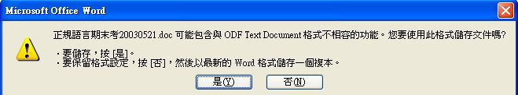

關於 Sun ODF Plugin for Microsoft Office

我 4 年前開始使用 OpenOffice.org，3 年前 OpenOffice.org 將它的預設資料格式改為 opendocument，前年 opendocument format (ODF) 格式得到 ISO 的認可，成為第一個公開的辦公室文件檔案標準，除了 MS Office 之外的很多辦公室軟體都有支援 ODF，只是 MS Office 就是不支援 ODF，而是他們自己要訂一個 OpenXML 的格式，我想 MS Office 就是要用自己的格式讓別人無法與他們競爭，可能他們覺得自己是市佔率最高的軟體公司，大家應該要聽他們的。
我自己儘可能鼓勵大家使用 OpenOffice.org，也鼓勵大家儘量使用 ODF 的檔案格式，因為公開的檔案標準真的很重要，只是在推展大家使用 OpenOffice.org 的過程當中，很多人反應自己已經習慣 MS Office 了，有的人反應 OpenOffice.org 使用上不夠直覺，有人覺得 OpenOffice.org 不好用，只是我總覺得很多時候都是習慣問題，雖然我知道習慣是慢慢養成的，您一定可以現在開始養成好的、新的習慣，只是很多人還是喜歡自己的使用習慣。
前陣子 Sun 出了一個 plugin 的程式，可以讓 MS Office 打開 ODF 的檔案，也可以存成 ODF 的檔案，好處是大家在使用自己習慣的 MS Office 時，同時可以存取公開標準的 ODF 格式的檔案，我想這對 ODF 格式的推展應該會有好處才對。只是我想如果您對 OpenOffice.org 的使用不會有太大困難的話，我還是鼓勵您使用 OpenOffice.org，終究它是自由軟體，不需要費用的，而且它對 ODF 的支援應該是比較完整的。Sun 的這個 plugin 程式目前最近版本是 1.2 版，目前有支援 Office 2007, 2003、XP 與 2000。
下載 Sun 的 ODF plugin 程式的方式是到 「Sun ODF Plugin for Microsoft Office」這個網頁，點選網頁中上方的「Get It Now. Free」那個超連結，連到下個網頁，之後點選網頁中的「Download Now」超連結，
就進到下個網頁，這個網頁中勾一個同意他們的軟體版權宣言，然後就按 Continue，
然後進到下載的網頁，要選擇下載的項目，有兩個版權宣言檔案、一個說明檔與一個程式檔，我是全部都選擇、然後點選「Download Selected with Sun Download Manager」，
之後就開啟了我從前安裝過的 Sun 的下載管理員，
照理說接下來直接按「Start」那個鈕即可，只是最好先看看它會下載到哪裡去，可以在「File」、「Options」裡面的「Download」那一項中看到位置。這些檔案共三十多 Mega，下載完之後直接安裝即可。
安裝完之後，打開 word 時，就可以開啟 odt 檔。可以在「開啟舊檔」裡面找到「ODF Text Document(*.odt)」的選項，如此就可以開啟 odt 檔了。
也可以用「另存新檔」的方式將原本的 doc 檔存成 odt 檔，
選擇 odt 檔來存時，雖然存取時都會出現一些警告的訊息，但終究是可以存取了。
只是開啟的速度有點慢、而且我用 OpenOffice.org 所做的 odt 檔格式稍微會跑掉，特別是圖形與表格的部份，另存成 odt 格式的檔案也有類似的情形。
在Powerpoint 與 Excel 裡面則是出現了兩個圖案：匯入ODF 與 匯出ODF，用這兩個來匯入與匯出 ODF 檔案。
我用過 powerpoint 來打開我自己做的一些 odp 的檔案，感覺還不錯，格式跑掉的情形不多，圖形與動畫都蠻正常的，但如果我的檔案中有包含一些比較複雜的表格或數學方程式時，就比較容易跑掉了。
可是在 Excel 裡面雖然也有這兩個按鈕，但是我在 Office 2003 與 2007 裡面試用的結果卻發現：都無法正常使用，無論匯入還是匯出都會有程式執行錯誤，實在可惜。另外若是您用 Office 2007 的話，Powerpoint 與 Excel 的這兩個按鈕都是出現在「增益集」裡面，我找了好久才找到，我實在不熟悉 Office 2007 的界面。
另外，我也發現安裝了這個 plugin 之後，所有 odt 檔的關聯會被改掉，1.0 版時是全改成用 word 開啟，而 1.2 版似乎將 odt 的關聯改成要詢問，odp 與 ods 檔就沒有影響。我想這個 plugin 只適合不習慣用 OpenOffice.org 的人吧！對我們常使用 OpenOffice.org 的人來說就還是直接使用 OpenOffice.org 就好。
無論如何，這至少是幫助 MS Office 的使用者存取 ODF 格式的機會，雖然我還是認為不使用 MS Office 最好，但是若您一定要使用 MS Office 的話，我想您最好還是使用 ODF 格式的檔案比較好，因為支援 ODF 的軟體一定會比較多，可靠度會更好。